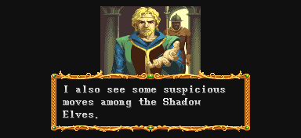
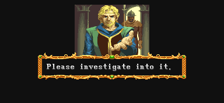
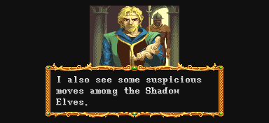
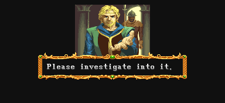

| STAGE 4 The Skies over Aengmore |
| 아엔모어 상공 |
| (일어판 - アエングモアの森·上空 : 아엔모어 숲 상공) |
셰도우 엘프가 주를 이루는 스테이지로 스테이지 크기 자체는 작지만
'하피'라는 날아다니는 보스가 나오는 어려울 수도 있는 스테이지다.
하피를 넘기면' 텔'아린'이라는 셰도우 엘프 보스가 나온다.
초보자에겐 고비가 될 수 있는 스테이지다.
'하피'라는 날아다니는 보스가 나오는 어려울 수도 있는 스테이지다.
하피를 넘기면' 텔'아린'이라는 셰도우 엘프 보스가 나온다.
초보자에겐 고비가 될 수 있는 스테이지다.
인트로 |
♪ BGM재생 ♪
글란트리(Glantri) 공국
(일어판)
グラントリ公國
그란트리 공국
글란트리 왕자 '말라키 두 마라이'
(일어판)
グラントリ公國王子 マラキ―·ドゥ·マライ
그란트리 공국 왕자 마라키 도우 마라이
"...내가 생각한 대로군.
이 어두운 징후는 미스타라(Mystara)전체에 나쁜 조짐을 예고하고 있소."
(일어판)
""やはり。名國でそんなことが起こっていたのか。"
"역시, 명국에서 그런 일이 일어났다는건가."

"또한 셰도우 엘프 사이에서 수상한 움직임이 보이고 있소."
(일어판)
""最近, シャド―エルフ達にあやしい動きが目立つ。"
"최근, 섀도우 엘프들에게서 이상한 움직임이 보이고 있소."

"이것을 조사 해 주셨으면 하오."
(일어판)
"すまないが眞相をつきとめて欲しい。"
"미안하지만 진상을 밝혀줬으면 좋겠소."
"이곳에서 남쪽에 아엔모어의 라펠튼(Rafielton) 시가 있소."
(일어판)
"ここから更に南に、アエングモアのラフィ―ルトン市がある。"
"여기서 더 남쪽으로 아엔모어의 라필튼시가 있소."
"거기서 조사를 시작할 수 있을거요. 당신을 위해 비행정을 준비하겠소."
(일어판)
"我が國の飛行船を用意しよう.まず, そこに向かってくれ"
"우리나라의 비행선을 준비하겠소. 우선 그곳으로 향해 주시오."
당신은 비행정에 탑승해서 아엔모어의 라펠튼시로 향한다.
(일어판)
君は飛行船に乘り, アエングモアのラフィ―ルトン市に向かった
당신은 비행선을 타고 아엔모어의 라필튼시로 향한다.
글란트리(Glantri) 공국
(일어판)
グラントリ公國
그란트리 공국
글란트리 왕자 '말라키 두 마라이'
(일어판)
グラントリ公國王子 マラキ―·ドゥ·マライ
그란트리 공국 왕자 마라키 도우 마라이
"...내가 생각한 대로군.
이 어두운 징후는 미스타라(Mystara)전체에 나쁜 조짐을 예고하고 있소."
(일어판)
""やはり。名國でそんなことが起こっていたのか。"
"역시, 명국에서 그런 일이 일어났다는건가."

"또한 셰도우 엘프 사이에서 수상한 움직임이 보이고 있소."
(일어판)
""最近, シャド―エルフ達にあやしい動きが目立つ。"
"최근, 섀도우 엘프들에게서 이상한 움직임이 보이고 있소."

"이것을 조사 해 주셨으면 하오."
(일어판)
"すまないが眞相をつきとめて欲しい。"
"미안하지만 진상을 밝혀줬으면 좋겠소."
"이곳에서 남쪽에 아엔모어의 라펠튼(Rafielton) 시가 있소."
(일어판)
"ここから更に南に、アエングモアのラフィ―ルトン市がある。"
"여기서 더 남쪽으로 아엔모어의 라필튼시가 있소."
"거기서 조사를 시작할 수 있을거요. 당신을 위해 비행정을 준비하겠소."
(일어판)
"我が國の飛行船を用意しよう.まず, そこに向かってくれ"
"우리나라의 비행선을 준비하겠소. 우선 그곳으로 향해 주시오."
당신은 비행정에 탑승해서 아엔모어의 라펠튼시로 향한다.
(일어판)
君は飛行船に乘り, アエングモアのラフィ―ルトン市に向かった
당신은 비행선을 타고 아엔모어의 라필튼시로 향한다.
비행정 |
비행정 위를 서성이는 (경비를 서는?) 병사들
"적! 적이다!!"
(일어판)
"敵だ―敵だ――!!"
"적이다~ 적이다~~!!"
셰도우 엘프 마법사의 파이어 볼 한방에 전멸하고 만다.
비행정 안에서만 싸우기 때문에 스테이지 자체는 작다.
상자 B의 경우 하피와 싸울 때 걸리적 거릴 수 있으니 미리 열거나 한곳으로 치우도록 하자.
상자 A - 잠겨있다.
| 랜덤 아이템 | 고정 아이템 | 클래스별 아이템 | |||||||
|
|||||||||
| 드워프가 격파시 | |||||||||
상자 B - 잠겨있다.
| 랜덤 아이템 | 고정 아이템 | 클래스별 아이템 | |||||||
|
|||||||||
| 드워프가 격파시 | |||||||||
등장하는 적 - 전부 제거하면 하피가 등장한다.
| 1인 | 오른쪽에서 셰도우 엘프 x3 → 한명만 남으면 마법사 셰도우 엘프 → 오른쪽에서 셰도우 엘프 x3 → 한명이 제거되면 마법사 셰도우 엘프 |
| 2인 | 1인 플레이와 똑같다. |
| 3인 | 오른쪽에서 셰도우 엘프 x3 → 한명만 남으면 마법사 셰도우 엘프 → 왼쪽에서 셰도우 엘프 x2 + 오른쪽에서 셰도우 엘프 x3 → 세명이 제거되면 마법사 셰도우 엘프 |
| 4인 | 3인 플레이와 똑같다. |
|
셰도우 엘프를 전부 제거하면 하피가 난입한다.
간단한 공략 - 자세한 공략은 보스 공략을 보도록 한다. ▶ 보스 공략 보기
비행이 가능하기 때문에 한번 날아다니기 시작하면 정신이 없다.
또한 셰도우 엘프의 방해도 무척 신경쓰인다. 초보일 경우 고생이 심할 수 있다.
스테이지 가장 오른쪽에서 해머와 단검을 전부 던져서 데미지를 최대한 입히고 하피가 빠져나가 보지 않기를 바라면서 공격을 해보는 수 밖에 없다. 파이터의 경우 대공기를 무한대로 연속해서 연결시킬 수 있으니 적극 활용하도록 하자.
날아다니는 하피는 매직 유저나 엘프는 주문으로 떨어뜨리는게 좋고 클레릭은 컨티뉴얼 라이트로 떨어뜨리는게 좋다. 파이터나 드워프는 A+B를 이용하는게 괜찮으며 시프는 슬링으로 견제하자.
파이터의 무한 대공기가 아니라면 100% 제압 방법은 없다. 세이브/로드를 통해서 하피의 각종 패턴에 적응하는게 좋다. 특히 시프와 드워프는 연습이 꼭 필요하다.
비행이 가능하기 때문에 한번 날아다니기 시작하면 정신이 없다.
또한 셰도우 엘프의 방해도 무척 신경쓰인다. 초보일 경우 고생이 심할 수 있다.
스테이지 가장 오른쪽에서 해머와 단검을 전부 던져서 데미지를 최대한 입히고 하피가 빠져나가 보지 않기를 바라면서 공격을 해보는 수 밖에 없다. 파이터의 경우 대공기를 무한대로 연속해서 연결시킬 수 있으니 적극 활용하도록 하자.
날아다니는 하피는 매직 유저나 엘프는 주문으로 떨어뜨리는게 좋고 클레릭은 컨티뉴얼 라이트로 떨어뜨리는게 좋다. 파이터나 드워프는 A+B를 이용하는게 괜찮으며 시프는 슬링으로 견제하자.
파이터의 무한 대공기가 아니라면 100% 제압 방법은 없다. 세이브/로드를 통해서 하피의 각종 패턴에 적응하는게 좋다. 특히 시프와 드워프는 연습이 꼭 필요하다.
(ps. 하피를 2분대 이내에 클리어 하지 않았다면 이 대사부분이 나오지 않는다.)
♪ BGM재생 ♪
"저게 뭐지?!"
(일어판)
"何っ!!...。"
"뭣이!!"
"허공에 성이???"
(일어판)
"天空の城か???"
"천공의 성인가???"
"그럴리가. 저렇게 큰게 공중에 떠 있을 수 없어."
(일어판)
"まさか、城か浮くわけはないよな...。"
"설마하니, 성이 공중에 떠 있을리는 없는데..."
|
스테이지 시점이 약간 바뀌면서 와이번을 탄 셰도우 엘프 대장(텔'아린)이 나타난다.
스켈레톤 넷을 소환하고 잠시 사라진다.
스켈레톤을 전부 물리치면 텔레포트 하면서 나타난다.
간단한 공략 - 자세한 공략은 보스 공략을 보도록 한다. ▶ 보스 공략 보기
무기가 길다는 점을 조심해야 한다. 또한 가드를 잘하니 정면공격은 성공률이 많이 떨어진다.
HP가 떨어지면 스켈레톤을 다시 소환하기도 하며 무엇보다 무서운 점은 HP가 많이 떨어지면 헤이스트를 쓴다는 점이다. 모든 행동이 빨라지기 때문에 고전할 수 밖에 없다.
전체 HP의 40%를 떨어뜨리면 도망가면서 클리어가 되는데 그전에 헤이스트가 나오게 된다.
스켈레톤 소환 후 세번 이내로 쓰러뜨리면서 HP를 40%까지 낮춘 후 1히트 이상 공격을 성공시켜야 한다.
싸움이 시작되면 등뒤가 비니 뒤쪽에서 콤보를 넣을 수 있다. HP바 두번째 줄이 화면 반정도 떨어질 때까지 콤보를 넣고 단검을 던져서 쓰리뜨리지 않고 데미지를 주거나 아니면 오일을 던지고 다운공격을 반복해서 데미지를 최대한 입히는게 편하다.
클레릭이라면 컨티뉴얼 라이트나 홀드 퍼슨을 통해서 쉽게 데미지를 입힐 수 있고 매직 유저나 엘프라면 남은 주문으로 마무리가 되지만 파이터/시프/드워프는 실수하지 않도록 조심해야 한다.
무기가 길다는 점을 조심해야 한다. 또한 가드를 잘하니 정면공격은 성공률이 많이 떨어진다.
HP가 떨어지면 스켈레톤을 다시 소환하기도 하며 무엇보다 무서운 점은 HP가 많이 떨어지면 헤이스트를 쓴다는 점이다. 모든 행동이 빨라지기 때문에 고전할 수 밖에 없다.
전체 HP의 40%를 떨어뜨리면 도망가면서 클리어가 되는데 그전에 헤이스트가 나오게 된다.
스켈레톤 소환 후 세번 이내로 쓰러뜨리면서 HP를 40%까지 낮춘 후 1히트 이상 공격을 성공시켜야 한다.
싸움이 시작되면 등뒤가 비니 뒤쪽에서 콤보를 넣을 수 있다. HP바 두번째 줄이 화면 반정도 떨어질 때까지 콤보를 넣고 단검을 던져서 쓰리뜨리지 않고 데미지를 주거나 아니면 오일을 던지고 다운공격을 반복해서 데미지를 최대한 입히는게 편하다.
클레릭이라면 컨티뉴얼 라이트나 홀드 퍼슨을 통해서 쉽게 데미지를 입힐 수 있고 매직 유저나 엘프라면 남은 주문으로 마무리가 되지만 파이터/시프/드워프는 실수하지 않도록 조심해야 한다.
텔'아린이 와이번을 타고 모습을 드러낸 이후로 약 1분 30초가 지났을 경우 뒷 배경이 검은 하늘에서 약간 밝아지며 숲으로 바뀐다.
(배경변화만 보고 싶다면 1분 30초 정도로 넘어가기 바란다.)
이것은 크게 신경 쓸 일은 아니지만 만약 텔'아린과의 싸움이 시작되고 나서부터 1분 30초가 지났다면 이후에 스테이지 5-B로 갈 수 없다. 자세한 내용은 다음 페이지 (선택지 2)를 보기 바란다.
- 엄밀히 말하면 배경이 숲으로 바뀌는 것과 스테이지 5-B로 갈 수 있느냐 없느냐는 상관이 없다. -
telarin/ta_end1.gif)
"망할 자식들! 이제부터 내 진짜 힘을 보여주마!"
(일어판)
"くそっ、こうなったら、究極の魔法をおみまいしてやる。"
"젠장, 이렇게 된 이상, 궁극의 마법을 보여주마."
분신술(??)을 써서 5명으로 늘어난 후 5발의 파이어 볼을 날리고 플레이어들은 전부 쓰러진다.
telarin/ta_end3.gif)
"하하하하! 우리를 염탐한 것에 대한 댓가다!"
(일어판)
"ハッハハハハァ―ッ。我我の秘密をさぐろうなどとるからだ。"
"하하하하핫. 우리의 비밀을 캐려고 한 댓가다!"
telarin/ta_end4.gif)
"이 놀이도 지쳤다. ?????" - 뒷문장이 엉망.
(일어판)
"あ遊びは、もう終わりだ。これで樂にしてやろう。"
"놀이는 이제 끝이다. 이제 편하게 해 주지."
telarin/ta_end5.gif)
다시 파이어 볼을 시전하려는 텔'아린을 급습하는 의문의 인물 (이라고 하기엔 알려질 만큼 알려졌지만)
telarin/ta_end6.gif)
"이번엔 보내주도록 하지!"
(일어판)
"くっ、今日のところはみのがしてやろう。"
"큭, 오늘은 이쯤에서 봐주도록 하지."
"다시 만나기를 기대하마."
(일어판)
"また、逢えるのを樂しみにしている。"
"또 만나길 기대하고 있겠다."
telarin/ta_end8.gif)
그리고 웃어재끼며 어디론가 텔레포트 해 버리고 이 스테이지는 마무리가 된다.
▶ 클리어 후 레벨이 올라가는 클래스 : 파이터, 클레릭, 시프, 드워프
알아도 그만 몰라도 그만인 내용
- 내용 보기 -
텔'아린 물리치고 나면 지정된 자리로 강제로 이동된다.
이 자리와 멀리 있으면 그만큼 걸어가는 시간이 있으니
시간이 급하다면 미리 최대한 자리를 가깝게 잡는게 좋다.
이 자리와 멀리 있으면 그만큼 걸어가는 시간이 있으니
시간이 급하다면 미리 최대한 자리를 가깝게 잡는게 좋다.
Copyright ⓒ 2007-2008 Crassus & Legon. All rights reserved.